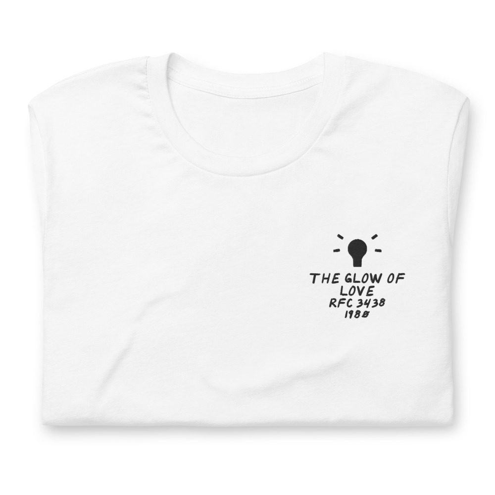
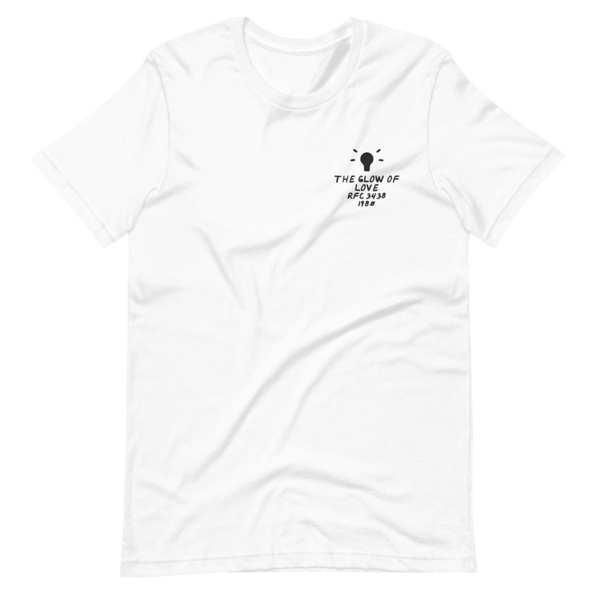

Change – The Glow Of Love
LP · RFC Records RFC 3438 · 1980
Ungraded, checked before it ships
Comes with its own shirt: a white tee embroidered on the chest with its title, catalog number and year in my handwriting. Pick a size at checkout. It’s made for you and ships on its own.


Buy $91
Play a track
Most of it was recorded in Bologna, Italy, with the vocals added in New York. Luther Vandross sang lead on “The Glow of Love” and “Searching,” the year before “Never Too Much.”
Side 1
- A Lover’s Holiday6:24
- It’s A Girl’s Affair5:29
- Angel In My Pocket6:10
Side 2
- The Glow Of Love6:11
- Searching8:01
- The End5:54
Backing Band
Goody Music Orchestra
Lead Vocals
Luther Vandross
Produced by Jacques Fred Petrus, Mauro Malavasi · Conducted by Davide Romani, Paolo Gianolio